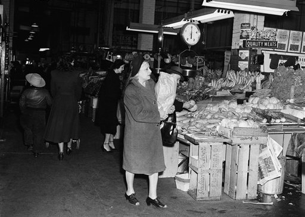
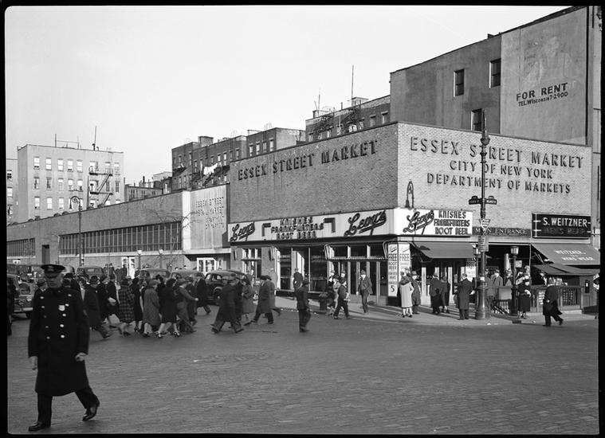

A summary of the Essex Market history(Based on the Essex Market Website)
This image shows a woman,back when the Essex Market was in development, buying vegetables and such other things. A lot of women were mostly doing the shopping for their kids since their husbands were fighting and preparing to fight in WWII (Interesting fact). This was a rough time for both women and men, they had to deal with a lot of conflict in order to protect what they needed to protect.
This image shows the Lower East Side back in the old days. You probably recognize the building where the pizza shop is taken place. The Lower East Side was filled with a lot of immigrants who migrated, in order to sustain a great life. However most immigrants had to be in the bottom half of Manhattan because of New York City getting all changed up at upper Manhattan (Central Park).
